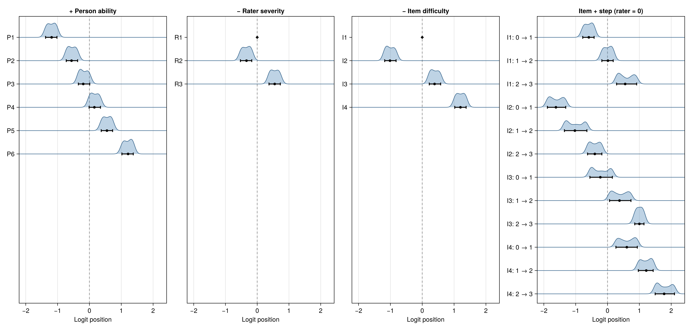

BayesianMGMFRM.jl · Separate person ability, task difficulty, and rater severity with full Bayesian uncertainty
Documentation and Entry Guide
Updated manual and entry guide · 9 November 2026.
One-dimensional many-facet Rasch measurement (MFRM) is the supported baseline workflow.
Generalized, multidimensional, and multi-outcome extensions under Experimental retain the explicit identification and validation limits stated in each guide.
Start here by goal
- Open the complete 38-page manual (
/dev/) — organized into six sidebar sections with task routing and visual previews.
- New to Julia? 5-Minute Guide for R, Python, and FACETS Users — project environments,
:symbols, keyword arguments, interactive ? help, and common first-time pitfalls.
- Compare with FACETS, ACER ConQuest, R (TAM / mirt), and Stan — capability matrix, sign conventions, anchors, and posterior uncertainty.
- Explore the Visualization Gallery — all 12
BayesianMGMFRM.plot(x; kind = ...) modes including Wright Maps, Pathway Maps, Ridge Wright Maps, and 3D MGMFRM Response Surfaces.
- Manuscript Reporting Checklist (Methods & Results) — what to report in a journal article, where to inspect it in
BayesianMGMFRM.jl, and an illustrative prose template.
- Follow the 4-Step Bayesian Workflow — validate design, specify model & priors, fit & qualify MCSE, and report & save portable JSON receipts.
- API Reference (Practitioner Layer 1 & Glass-Box Layer 2) — unified lifecycle verbs and exact mathematical/coordinate/gradient inspection hooks.
Visual preview

1. Shared-Scale Wright Map (kind = :wright): person abilities, item difficulties, rater severities, and step thresholds on one logit scale.

2. Location vs. Fit Pathway Map (kind = :pathway): posterior location estimates against infit/outfit mean-square diagnostics.

3. Ridge Posterior Wright Map (plot_wright(...; kind = :ridge)): full posterior density ridges for rater severities and item difficulties.

4. 3D Multidimensional Response Surface (kind = :response_surface): expected score across two latent dimensions in an MGMFRM.
Install the matching source revision
With Julia 1.10.8 or newer, install this exact source commit (2becfad8031b):
using Pkg
Pkg.activate("rating-local")
Pkg.add(url="https://github.com/Ryuya-dot-com/BayesianMGMFRM.jl",
rev="2becfad8031b4820ee9dfeaf239840dd2cbb1f31")
Pkg.pin("BayesianMGMFRM")
using BayesianMGMFRM
include(joinpath(pkgdir(BayesianMGMFRM), "examples", "first_analysis.jl"))
result = FirstMFRMAnalysis.main()
Dated manual snapshots:
9 November 2026 snapshot ·
13 October 2026 successor preview ·
13 October preview ·
12 October preview ·
GitHub Repository